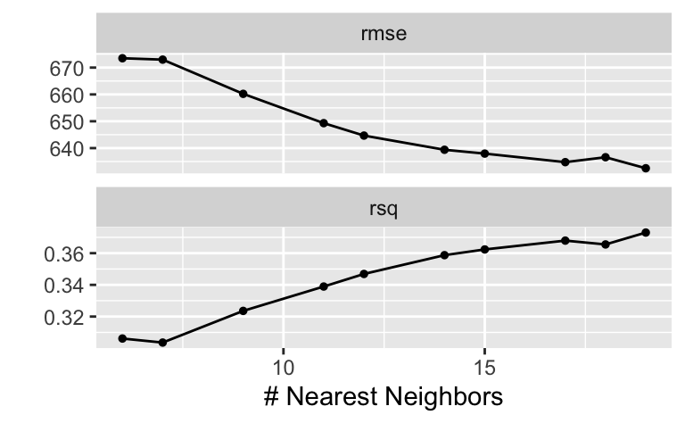

library(tidymodels)
library(tidyverse)
data(penguins, package = "palmerpenguins")Aufgabe
Berechnen Sie die Vorhersagegüte (RMSE) für folgende Lernalgorithmen:
- lineares Modell
- knn (neighbors: tune)
Modellgleichung: body_mass_g ~ bill_length_mm, data = d_train.
Tunen Sie bei neighbors folgende Werte: 5, 10, 15, 20, 35, 30 und betrachten Sie deren Modellgüte.
Nutzen Sie minimale Vorverarbeitung.
Berichten Sie die den RSME.
Lösung
Setup
Daten
d <-
penguins %>%
drop_na()d_split <- initial_split(d)
d_train <- training(d_split)
d_test <- testing(d_split)Modelle
Lineares Modell:
mod_lin <- linear_reg()
mod_knn <- nearest_neighbor(mode = "regression",
neighbors = tune())Rezepte
rec_basic <- recipe(body_mass_g ~ bill_length_mm, data = d_train) %>%
step_normalize(all_predictors())
rec_basicResampling
rsmpls <- vfold_cv(d_train)Workflow Set
wf_set <-
workflow_set(
preproc = list(rec_simple = rec_basic),
models = list(mod_lm = mod_lin,
mod_nn = mod_knn)
)
wf_set# A workflow set/tibble: 2 × 4
wflow_id info option result
<chr> <list> <list> <list>
1 rec_simple_mod_lm <tibble [1 × 4]> <opts[0]> <list [0]>
2 rec_simple_mod_nn <tibble [1 × 4]> <opts[0]> <list [0]>Tuningparameter-Werte bestimmen
Welche Tuningparameter hatten wir noch mal ausgewiesen?
mod_knn %>%
extract_parameter_set_dials()Collection of 1 parameters for tuning
identifier type object
neighbors neighbors nparam[+]Updaten wir die Parameter mit unseren Werten, also min. 5 Nachbarn und max. 20 Nachbarn.
params_knn <-
mod_knn %>%
extract_parameter_set_dials() %>%
update(neighbors = neighbors(c(5, 20)))
params_knnCollection of 1 parameters for tuning
identifier type object
neighbors neighbors nparam[+]Diese Infos ergänzen wir jetzt in das Workflow-Set-Objekt für den Workflow mit der ID “rec_simple_mod_nn” unter der Spalte “Options”:
wf_set <-
wf_set %>%
option_add(param_info = params_knn, id = "rec_simple_mod_nn")
wf_set# A workflow set/tibble: 2 × 4
wflow_id info option result
<chr> <list> <list> <list>
1 rec_simple_mod_lm <tibble [1 × 4]> <opts[0]> <list [0]>
2 rec_simple_mod_nn <tibble [1 × 4]> <opts[1]> <list [0]>Fitten
wf_set_fit <-
wf_set %>%
workflow_map(resamples = rsmpls)
wf_set_fit# A workflow set/tibble: 2 × 4
wflow_id info option result
<chr> <list> <list> <list>
1 rec_simple_mod_lm <tibble [1 × 4]> <opts[1]> <rsmp[+]>
2 rec_simple_mod_nn <tibble [1 × 4]> <opts[2]> <tune[+]>Check:
wf_set_fit %>% pluck("result")[[1]]
# Resampling results
# 10-fold cross-validation
# A tibble: 10 × 4
splits id .metrics .notes
<list> <chr> <list> <list>
1 <split [224/25]> Fold01 <tibble [2 × 4]> <tibble [0 × 3]>
2 <split [224/25]> Fold02 <tibble [2 × 4]> <tibble [0 × 3]>
3 <split [224/25]> Fold03 <tibble [2 × 4]> <tibble [0 × 3]>
4 <split [224/25]> Fold04 <tibble [2 × 4]> <tibble [0 × 3]>
5 <split [224/25]> Fold05 <tibble [2 × 4]> <tibble [0 × 3]>
6 <split [224/25]> Fold06 <tibble [2 × 4]> <tibble [0 × 3]>
7 <split [224/25]> Fold07 <tibble [2 × 4]> <tibble [0 × 3]>
8 <split [224/25]> Fold08 <tibble [2 × 4]> <tibble [0 × 3]>
9 <split [224/25]> Fold09 <tibble [2 × 4]> <tibble [0 × 3]>
10 <split [225/24]> Fold10 <tibble [2 × 4]> <tibble [0 × 3]>
[[2]]
# Tuning results
# 10-fold cross-validation
# A tibble: 10 × 4
splits id .metrics .notes
<list> <chr> <list> <list>
1 <split [224/25]> Fold01 <tibble [16 × 5]> <tibble [0 × 3]>
2 <split [224/25]> Fold02 <tibble [16 × 5]> <tibble [0 × 3]>
3 <split [224/25]> Fold03 <tibble [16 × 5]> <tibble [0 × 3]>
4 <split [224/25]> Fold04 <tibble [16 × 5]> <tibble [0 × 3]>
5 <split [224/25]> Fold05 <tibble [16 × 5]> <tibble [0 × 3]>
6 <split [224/25]> Fold06 <tibble [16 × 5]> <tibble [0 × 3]>
7 <split [224/25]> Fold07 <tibble [16 × 5]> <tibble [0 × 3]>
8 <split [224/25]> Fold08 <tibble [16 × 5]> <tibble [0 × 3]>
9 <split [224/25]> Fold09 <tibble [16 × 5]> <tibble [0 × 3]>
10 <split [225/24]> Fold10 <tibble [16 × 5]> <tibble [0 × 3]>Bester Kandidat
autoplot(wf_set_fit)
rank_results(wf_set_fit, rank_metric = "rmse") %>%
filter(.metric == "rmse")# A tibble: 9 × 9
wflow_id .config .metric mean std_err n preprocessor model rank
<chr> <chr> <chr> <dbl> <dbl> <int> <chr> <chr> <int>
1 rec_simple_mod_nn Prepro… rmse 645. 23.7 10 recipe near… 1
2 rec_simple_mod_lm Prepro… rmse 646. 26.0 10 recipe line… 2
3 rec_simple_mod_nn Prepro… rmse 651. 22.4 10 recipe near… 3
4 rec_simple_mod_nn Prepro… rmse 653. 22.7 10 recipe near… 4
5 rec_simple_mod_nn Prepro… rmse 656. 22.0 10 recipe near… 5
6 rec_simple_mod_nn Prepro… rmse 661. 22.4 10 recipe near… 6
7 rec_simple_mod_nn Prepro… rmse 670. 23.3 10 recipe near… 7
8 rec_simple_mod_nn Prepro… rmse 680. 24.8 10 recipe near… 8
9 rec_simple_mod_nn Prepro… rmse 699. 30.9 10 recipe near… 9Am besten war das lineare Modell, aber schauen wir uns auch mal das knn-Modell an, v.a. um zu wissen, wie man den besten Tuningparameter-Wert sieht:
wf_knn <-
extract_workflow_set_result(wf_set_fit, "rec_simple_mod_nn")wf_knn %>% autoplot()
wf_knn %>% select_best()Warning: No value of `metric` was given; metric 'rmse' will be used.# A tibble: 1 × 2
neighbors .config
<int> <chr>
1 19 Preprocessor1_Model8Last Fit
best_wf <-
wf_set_fit %>%
extract_workflow("rec_simple_mod_lm")Finalisieren müssen wir diesen Workflow nicht, da er keine Tuningparameter hatte.
fit_final <-
best_wf %>%
last_fit(d_split)Modellgüte im Test-Set
collect_metrics(fit_final)# A tibble: 2 × 4
.metric .estimator .estimate .config
<chr> <chr> <dbl> <chr>
1 rmse standard 670. Preprocessor1_Model1
2 rsq standard 0.369 Preprocessor1_Model1Categories:
- R
- statlearning
- tidymodels
- num